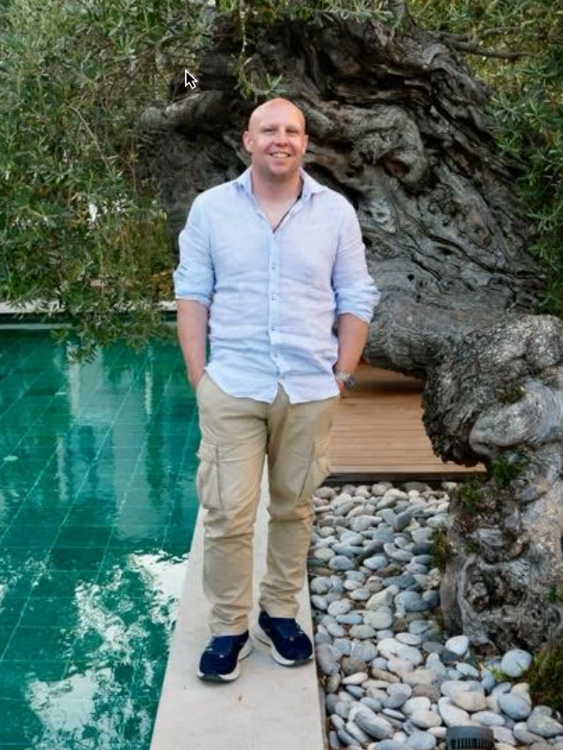

Technical leader & entrepreneur with 20 years building at the intersection of systems, craft, and curiosity. Currently building next-gen Ethereum infrastructure at init4. When I'm not writing code, you'll find me on the air as a ham radio operator, tinkering with electronics, or working with my hands.
Research collective building next-gen Ethereum infrastructure — rollup sequencing, block building, and the Signet network.
Led engineering for one of the premier NFT art marketplaces. Built Rare Protocol smart contracts and platform infrastructure.
A history of giving back — from emergency medical response and Waldorf education to community building and beyond.
Ecosystem crates for the Signet network
RustCore smart contracts powering the SuperRare NFT marketplace
SolidityScheduled & repeating functions made easy in Swift for macOS and Linux
SwiftBenchmarking server-side Swift frameworks against Node.js
Swift